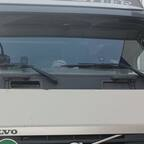

布哈拉
乌恰直达车在布哈拉换装一次：现场交接怎么理解
chinairantrucks 说的「直达车」，不是全程不开箱、不换车。乌恰线直达车的走法是：乌恰 → 布哈拉（换装 1 次）→ 伊朗。直达还是换装那一页写两种走法；这一页只把布哈拉这一次说清楚。
- 直达 = 布哈拉换装一次，不是封签到买方仓库
- TIR 开箱换车更少，不是没有；不改变时效和运费
- 可报目的地：马什哈德海关、德黑兰西关（阿普林）。入境萨拉赫斯
- 天数从乌恰口岸起算：直达目前到德黑兰 21–23 天、到马什哈德 18–21 天，当前区间，不是保证
直达是一次，不是零次
买方听到「直达」，要按这一次换装来理解。在布哈拉，货从当前牵引车上卸到下一程车上。换装车则是奥什一次、布哈拉再一次，或在伊朗边境再换。少换，不是不换。
TIR 在布哈拉管什么
TIR 是起运地加封加一份 carnet，过境国开箱更少。它不取消布哈拉这次换装，也不改时效、不改运费。
布哈拉之后交到哪
对外可报马什哈德海关、德黑兰西关（Gomrok Gharb / 阿普林）。入境走萨拉赫斯。伊朗清关由买方和清关行办理。贸易条款 CPT / DAP，仓到关，不到门，不做 DDP。车型是篷车（篷布半挂 / 侧帘车），不是集装箱。
天数从乌恰口岸起算
不含国内集货段。直达车目前到德黑兰 21–23 天、到马什哈德 18–21 天。这是当前运行区间，不是保证。国内仓到乌恰大约另计，通常约 7 天内，是估计，不和口岸表加总成一个标题数字。霍尔果斯线不写天数。
跟踪和询价
在途没有轨迹接口，节点靠人工更新。页面不报死价。正式报价走邮件、带有效期。把始发仓、目的海关（马什哈德或德黑兰）、HS、毛重、体积发到 sales@chinairantrucks.com。

常见问题
直达车是零换装吗？
不是。乌恰 → 布哈拉（换装 1 次）→ 伊朗。
TIR 会不会在布哈拉也不开箱？
不会承诺。更少，不是没有。TIR 不改变时效，也不改变运费。
送到工厂门口吗？
不送。送到目的海关场地。仓到关，CPT / DAP。不做 DDP。伊朗清关买方办。
相关: 乌恰线怎么选：直达车还是换装车 · 自乌恰起算目前 21–23 天到德黑兰 · TIR 在中伊走廊怎么运作 · 中国到伊朗汽运怎么询价